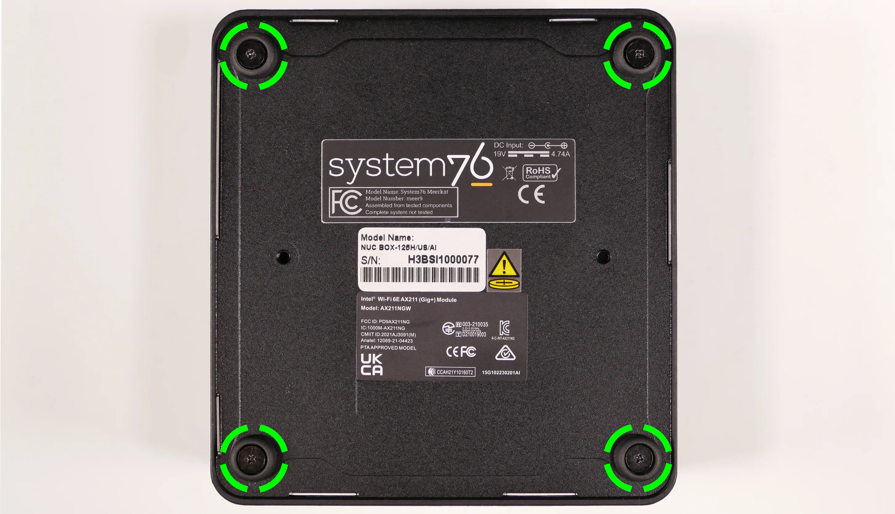
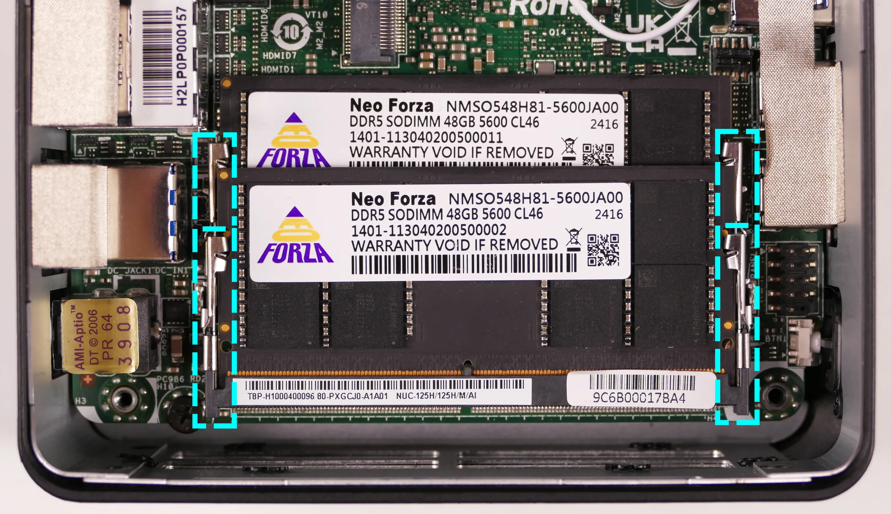
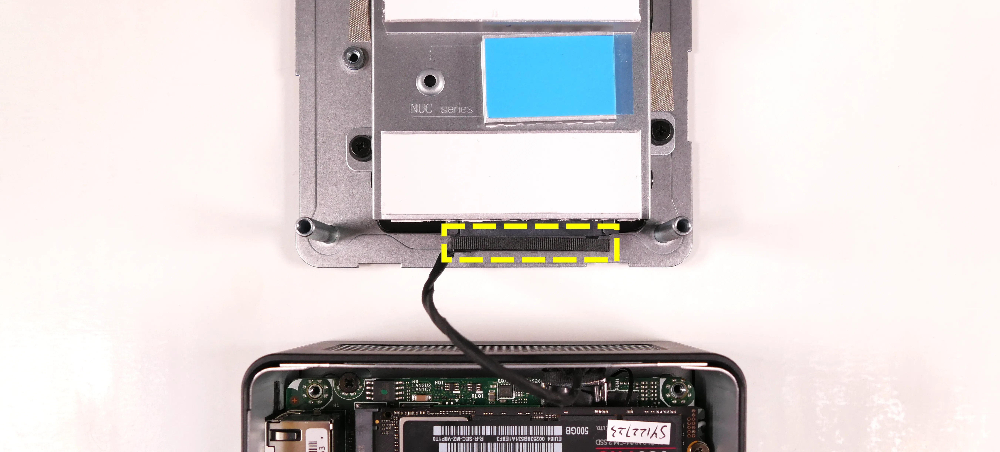
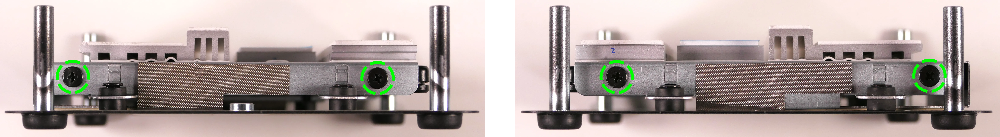
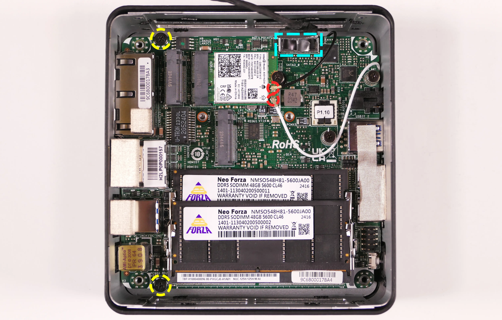
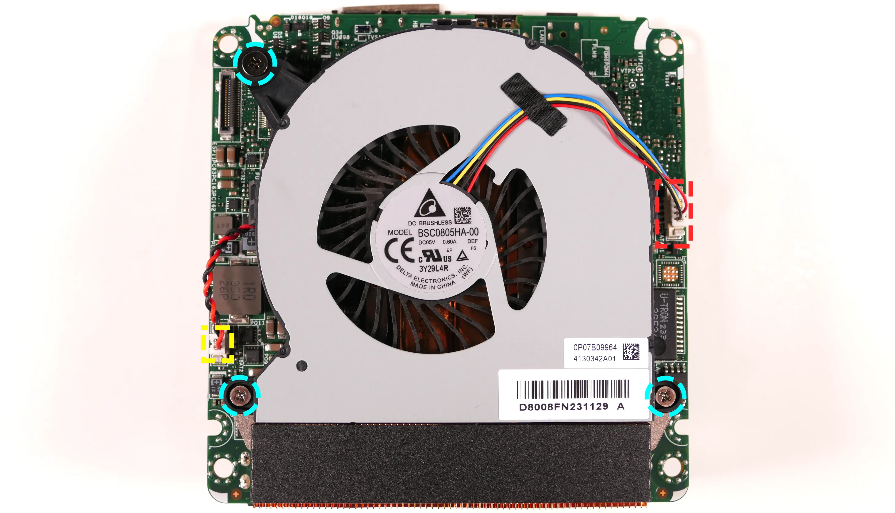
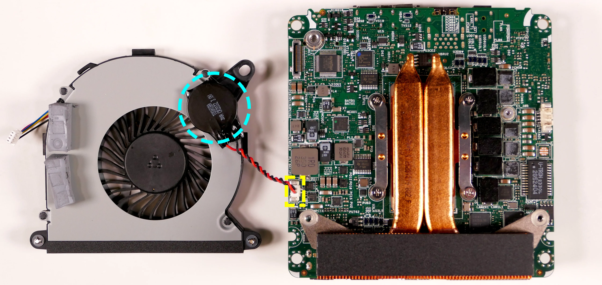
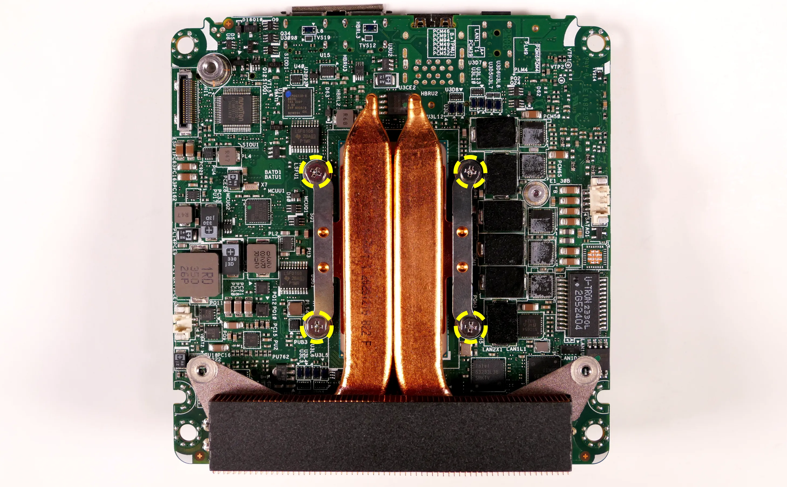

Meerkat (Parts & Repairs)
Several components in your Meerkat can be upgraded or replaced as necessary. Power the machine off and unplug all peripherals before working with any internal components. Then, follow these step-by-step guides for instructions:
- Removing the bottom panel
- Replacing an M.2 drive
- Replacing the RAM
- Replacing the 2.5" storage drive
- Replacing the WiFi/Bluetooth module
- Removing the motherboard
- Replacing the fan
- Replacing the CMOS battery
- Replacing the thermal paste
- Mounting with VESA mount
Removing the bottom panel:
The bottom panel can be removed to access the internal components.
Tools required: Cross-head (Phillips) screwdriver
Time estimate: 1 minute
Difficulty: Easy ●
Steps to remove the bottom panel:
- Place the machine lid-side down.
- Use a soft surface (such as a towel) to avoid scratches.
- Remove the four screws in the corners.
- The screws are not attached to the surrounding rubber rings.
- If any of the rubber rings come off of the bottom panel, put them back before replacing the screws.

- Lift the bottom panel off of the machine.
- If a 2.5" storage drive is installed, the cable will keep the bottom panel attached to the motherboard; flip the bottom panel over in the direction of the cable.
Replacing an M.2 drive:
Your Meerkat has two M.2 slots, which support PCIe NVMe Gen 4. Slot 1 fits sizes 2280 and 2242, while Slot 2 fits size 2242 only. (Adapter brackets can be used to install size 2230 SSDs into the 2242 slots.)
Tools required: Cross-head (Phillips) screwdriver
Time estimate: 6 minutes
Difficulty: Easy ●
Steps to replace the M.2 drives:
- Follow the steps above to remove the bottom panel.
- Unscrew the retainer screw opposite the M.2 slot.
- The Slot 1 (2280/2242) screw is highlighted cyan below, while the Slot 2 (2242) screw is highlighted yellow.
- If you're installing a drive into a slot for the first time and the screw is not present in the system, it was included separately in your Meerkat's box.

- Remove the existing M.2 drive by pulling it out of the slot.
- Insert the new M.2 drive into the slot and hold it in place.
- Replace the retainer screw.
- If you are installing a 2242 drive in the 2280/2242 slot where a 2280 drive was previously installed, you may need to remove the wireless card's screw (highlighted red below) and replace it with the adapter nut from your Meerkat's box, then insert the 2242 drive and secure its screw into the adapter nut.
- If the base nut comes out of the motherboard when removing the wireless card screw, screw it back into the motherboard (below the wireless card) before adding the adapter nut on top.


- If the base nut comes out of the motherboard when removing the wireless card screw, screw it back into the motherboard (below the wireless card) before adding the adapter nut on top.
- If you are installing a 2242 drive in the 2280/2242 slot where a 2280 drive was previously installed, you may need to remove the wireless card's screw (highlighted red below) and replace it with the adapter nut from your Meerkat's box, then insert the 2242 drive and secure its screw into the adapter nut.
- Replace the bottom panel.
- If you're using an SSD slot for the first time, remove the blue tape covering the corresponding thermal pad on the inner side of the bottom panel before reinstalling the panel.
Replacing the RAM:
The Meerkat 9 supports up to 96GB (2x48GB) of DDR5 SO-DIMMs running at 5600MHz. If you've purchased new RAM, need to replace your RAM, or are reseating your RAM, follow these steps.
Tools required: Cross-head (Phillips) screwdriver
Time estimate: 5 minutes
Difficulty: Easy ●
Steps to replace the RAM:
- Follow the steps above to remove the bottom panel.
- Pull the small tabs on both sides of the RAM away from the RAM stick simultaneously. The RAM should spring up to an angle.

- Remove the RAM from the slot.
- Insert the new RAM (or reseat the existing RAM) by placing it in the keyed slot and pressing down until it clicks into place.
Replacing the 2.5" storage drive:
The Meerkat 9 supports one 2.5" SATA III drive, which mounts onto the bottom panel.
Tools required: Cross-head (Phillips) screwdriver
Time estimate: 7 minutes
Difficulty: Easy ●
Steps to replace the 2.5" storage drive:
- Follow the steps above to remove the bottom panel.
- Unplug the SATA cable from the existing 2.5" drive (if installed).

- Unscrew the existing 2.5" drive from the sides of the drive caddy (if installed).
- It is not necessary to remove the drive caddy from the bottom panel.

- Slide the old drive out of the drive caddy (if installed), then slide the new drive in.
- Screw in the four side drive screws (two per side).
- If your Meerkat did not come with a 2.5" drive installed, then the screws were included separately in the box.
- Plug the SATA cable into the new 2.5" drive.
- Replace the bottom panel.
Resetting the CMOS:
A CMOS reset will restore the UEFI firmware settings to their factory defaults, which can sometimes help if the system is not booting.
Tools required: Cross-head (Phillips) screwdriver and (optionally) tweezers
Time estimate: 13 minutes
Difficulty: Medium ●
Steps to reset CMOS:
- Follow the steps above to remove the bottom panel and remove the M.2 drive.
- Disconnect the CMOS battery connector (labeled
RTCBATon the motherboard).- Try to pull the plug, not the wires.

- Hold down the power button for at least 15 seconds to discharge any residual energy in the system.
- Reconnect the CMOS battery.
- Replace the M.2 drive and bottom panel.
- Power up the machine. The system may take longer than usual to boot; this is normal behavior when the CMOS has been reset.
Replacing the wireless card:
Your Meerkat's WiFi and Bluetooth are both handled by the same module. It is a standard M.2 2230 slot with PCIe and USB interfaces (E-key).
Tools required: Cross-head (Phillips) screwdriver, 5.0 mm hex socket
Time estimate: 15 minutes
Difficulty: Medium ●
Steps to replace the WiFi/Bluetooth module:
- Follow the steps above to remove the bottom panel and remove the M.2 drive from Slot 1.
- Gently remove the two antennas (highlighted cyan below) by pulling them up and away from the wireless card.

- Remove the wireless card screw (or M.2 adapter nut) holding the wireless card down.
- If the base nut (below the wireless card) comes out of the motherboard during this step, screw it back into the motherboard before replacing the wireless card.
- The wireless card will pop up at an angle. Remove the card from the M.2 slot.
- Insert the new wireless card into the M.2 slot at an angle.
- Replace the retaining standoff.
- Attach the two antennas by aligning the circular fittings and pressing onto the wireless card. The connectors will snap into place.
- Use caution when attaching the connectors; the pins can bend, break, or snap.
Removing the motherboard:
Removing the motherboard is necessary for replacing the CMOS battery, cooling fan, and thermal paste.
Tools required: Cross-head (Phillips) screwdriver
Time estimate: 20 minutes
Difficulty: High ●
Steps to remove the motherboard:
- Follow the steps above to remove the bottom panel.
- Remove the M.2 drive and optionally unplug the SATA cable from the motherboard, highlighted cyan below.

- Disconnect the two wireless antenna cables, highlighted red above.
- Remove the two motherboard mounting screws near the back ports of the machine, highlighted yellow above.
- Carefully pull the motherboard out of the case.
- It is easiest to lift from the back ports, pivoting the board against the front side of the chassis.
- Slightly squeezing the sides of the chassis near the back ports can help provide more clearance while pivoting the motherboard.
- Slowly peel the tape above the front USB-C ports away from the chassis with the motherboard.
- When reinstalling the motherboard, ensure both the front and back ports are aligned with their chassis cutouts.
Replacing the fan:
The cooling fan can be removed to clean dust out of the cooling system or to access the CPU heatsink when replacing the thermal paste. The CMOS battery is mounted on the underside of the fan.
Part numbers:
- The fan is a Delta Electronics
BSC0805HA-00.
Tools required: Cross-head (Phillips) screwdriver
Time estimate: 25 minutes
Difficulty: High ●
Steps to replace the fan:
- Follow the steps above to remove the bottom panel, unplug the wireless card antennas, and remove the motherboard.
- In the below photos, the SATA cable has also been unplugged as detailed in removing the motherboard.
- Unplug the fan connector, highlighted red below.

- Unplug the CMOS battery connector, highlighted yellow above.
- This step is optional if you are not replacing the fan or the CMOS battery.
- Loosen the three fan screws (highlighted cyan above) and remove the fan.
- The two small, light silver screws (along the bottom edge) are held captive, and will not fully come away from the fan.
- The larger, dark silver screw will come apart from the fan when fully loosened.
- Peel the CMOS battery off of the old fan and stick it onto the new fan (if applicable).
- Reinstall the fan and fan screws, then plug the CMOS and fan connectors back into the motherboard.
- Reinstall the motherboard, reconnect the wireless card antennas, reconnect the SATA cable and reinstall the M.2 drive (as necessary), and reinstall the bottom panel.
Replacing the CMOS battery:
The CMOS battery supplies power to the system's CMOS chip, where UEFI settings and the computer's hardware clock are stored. If your clock is constantly resetting, your CMOS battery may need to be replaced.
Warning (ingestion hazard): Keep batteries out of reach of children. Death or serious injury can occur if ingested. If a battery is suspected to be swallowed or inserted inside any part of the body, seek immediate medical attention. In the US, you can also call the National Battery Ingestion Hotline for guidance: 1 (800) 498-8666
Part numbers:
- The CMOS battery is a standard 3V CR2032 battery.
- The stock battery is Toshiba brand.
Tools required: Cross-head (Phillips) screwdriver
Time estimate: 27 minutes
Difficulty: High ●
Steps to replace the CMOS battery:
-
Follow the steps above to remove the bottom panel, remove the motherboard, and remove the fan.
-
If not done while removing the fan, unplug the CMOS battery connector, highlighted yellow below.

- Slowly pull the CMOS battery away from where it's adhered to the fan. The double-sided tape may remain on the fan after the CMOS battery is removed.
- Stick the new CMOS battery onto the fan (next to the black plastic screw arm), then plug the new CMOS battery in and replace the fan, motherboard, and bottom panel.
Replacing the thermal paste:
Thermal paste helps facilitate heat transfer between the CPU and the cooling equipment. Depending on your climate and the age of the machine, replacing the thermal paste between the CPU and the heatsink may help the system run cooler.
Tools required: Cross-head (Phillips) screwdriver
Time estimate: 30 minutes
Difficulty: High ●
Steps to replace the thermal paste:
- Follow the steps above to remove the bottom panel, remove the M.2 drive, unplug the wireless card, remove the motherboard, and remove the fan and attached CMOS battery.
- Loosen the four heatsink screws in diagonal pairs (starting with one screw, then the one diagonal to it, followed by the other pair).
- The screws are held captive and will not completely separate from the heatsink.

- Gently lift the heatsink off of the motherboard.
- Using a paper towel, clean the old thermal paste off of the heatsink and CPU. You may also use a small amount of rubbing alcohol if the old paste is dried or difficult to remove.


- Apply a small line of thermal paste directly onto the CPU chip.

- Replace the heatsink and tighten the four screws.
- Partially tighten each screw first, then fully tighten them in diagonal pairs.
- Reinstall the fan and CMOS battery, motherboard, wireless card antennas, M.2 drive, and bottom panel.
Mounting with VESA Mount:
Your Meerkat comes with a VESA mount adapter, which allows it to be mounted on the back of a display. This allows operation as an all-in-one, taking up no additional desk space.
Because the Meerkat mounts to the display's VESA mount, this will only work on displays which aren't already mounted via the VESA mount.
Tools required: Cross-head (Phillips) screwdriver
Time estimate: 10 minutes
Difficulty: Easy ●
Steps to mount with the VESA adapter:
- Insert the two shoulder screws into the bottom of the Meerkat.

- Use the remaining four screws to attach the VESA mounting plate, using the arrow to guide the orientation.

- Insert the two shoulder screws in the Meerkat into the two holes in the mounting plate (highlighted cyan above), then set the Meerkat down so it hangs on the mounting plate.
- The Meerkat can be mounted in either direction.